Agent-centric-real-to-sim · 归档于 2026-11-03
WorldMirror
WorldMirror: Agentic Real-to-Sim Generation of Interactive Worlds from In-the-Wild Robot Demonstrations
归档到 Agent-centric-real-to-sim：一个 coding agent 把真机视频（DROID）变成可交互的 digital twin，让录下来的轨迹能在 sim 里直接回放——正是"agent 把真实世界变成仿真"这条线。截至 2026-11-03 项目页没有代码链接。
TL;DR
- Problem
- 把一段 in-the-wild 机器人视频变成可交互的 digital twin，还要让录下的轨迹不改一帧就能在 sim 里回放成功：feed-forward 重建一次定型没法纠错，通用 agent（GPT-6 Astra）布局对但外观假、碰撞不稳。
- Idea
- 把 real-to-sim 写成一个可执行的 world program：router agent 按固定的 construction graph 调四个专用 agent 和一堆生成工具（Meshy、Hunyuan3D…），每步由 judge 验证，失败就带着 failure type 回退到出错的 stage 重做；所有东西都放进以标定相机为锚的同一坐标系，所以机器人原轨迹直接回放。
- Result
- DROID 上回放位移误差 1.79 cm（GPT-6 Astra 11.17，RoLA 24.70），回放成功率 100% vs 40%，LPIPS 0.427 最好；去掉 verification 回放 final 误差从 2.34 cm 退到 33.86 cm（Tab. 4、5）。
Problem
想从一段真机视频得到"原轨迹能直接回放"的 digital twin：现有方法要么没对齐相机、要么外观糊、要么碰撞不稳，而且错了没法改
Running example · 后面每个 stage 都跟着它走
红笔进白碗（Fig. 2 左上）：一段 DROID 的 in-the-wild 视频 V（外置相机 RGB，桌上有 red marker 和 white bowl，指令 "Put the red marker inside the white bowl"）+ 当时录下的机械臂关节轨迹 T（含相机到机器人底座的外参）→ 想要：一个 Isaac Sim 里的场景，背景像真的、marker 和 bowl 是可编辑的 asset、相机和机器人底座都在同一坐标系里，把 T 原封不动播一遍，marker 真的落进 bowl。再想要：第一次回放失败时，系统能自己找出是哪一步错了并只重做那一步。
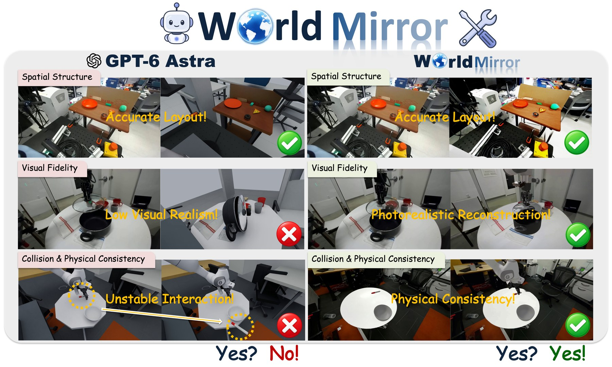
flowchart LR IN["例子输入
DROID 视频 V + 轨迹 T
“红笔进白碗”"] IN --> A1["RoLA
单张图 → 可交互场景"] A1 --> AX["没标定相机、无统一坐标系
位移误差 24.70 cm
方向误差 53°（Tab. 4）"]:::gap IN --> B1["RoboSnap
one-shot 视频 →
Gaussian 背景 + 几何"] B1 --> BX["背景糊、飘浮伪影
PSNR 10.30，LPIPS 0.641
（Tab. 2，Fig. 3）"]:::gap IN --> C1["SimFoundry
视频重建 + 位姿对齐
+ 物理标注"] C1 --> CX["物体摆不到原来的位置
mask IoU 0.169，
位置误差 19.54（Tab. 3）"]:::gap IN --> D1["GPT-6 Astra
通用 agent 从头
写一个 3D 世界"] D1 --> DX["布局对、外观假、碰撞不稳
LPIPS 0.606、成功率 40%
方向误差 81°（Tab. 2, 4）"]:::gap
推断的"坏在哪"：论文只报告了各 baseline 的指标（Tab. 2–4）和能力表（Tab. 1），没有逐个分析失败步骤。RoLA "没标定相机、没统一坐标系"来自 Tab. 1 的 ✗（Camera Calibration、Camera-Pose-Anchored Representation、Demonstration Replay）；RoboSnap 的"背景糊"是我看 Fig. 3 第二列的描述；SimFoundry 只在 Tab. 3 出现，论文没评它的视觉和回放；GPT-6 Astra 的"外观假、碰撞不稳"是 Fig. 1 作者自己的标注。位置误差 Tab. 3 没写单位。
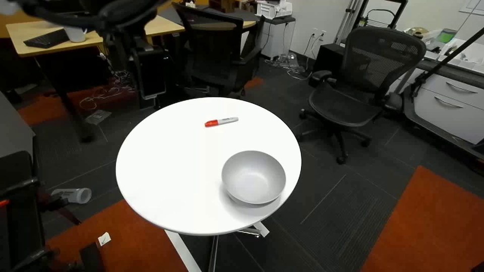
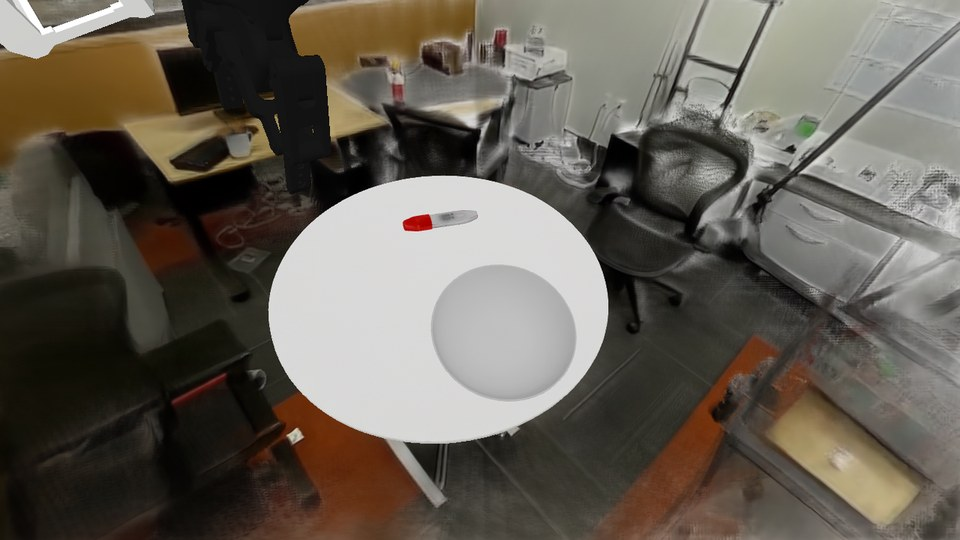
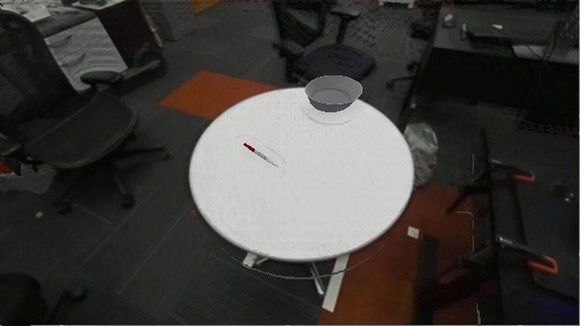
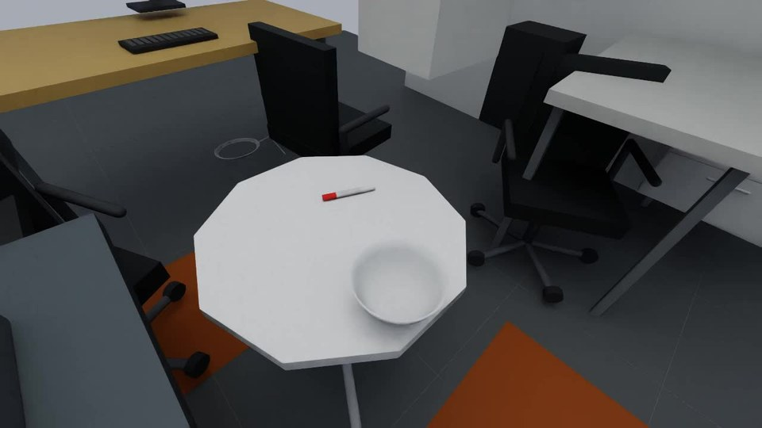
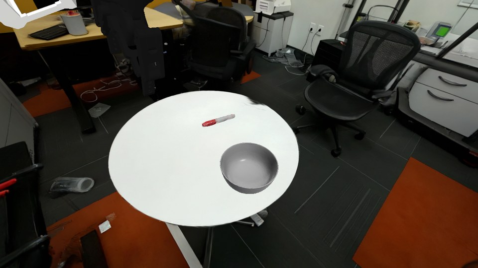
根本问题：real-to-sim 要同时满足视觉、几何、物理三类耦合的约束——摆错了要调布局，少了东西要重新分解场景，碰撞不对要重做物理表示——而 feed-forward 重建一次定型没法改，通用 agent 自己又生不出精细几何和真实外观（§1）。 这篇的切入点：把世界写成一个可执行的程序，让 coding agent 调专用生成工具一步步建、judge 验证、失败就回退到出错的那一步重做；相机先标定，场景、物体、机器人全都挂在这个相机坐标系下，所以原轨迹能直接回放。
Related work
| 相关工作 | 解决什么 | 怎么解决 | 和本文的区别 |
|---|---|---|---|
| 同一问题 · 别的解法 | |||
| 扫描 / 单图 / 短视频 → 可交互场景 RialTo, RoLA, PolaRiS | 从真实场景得到能让机器人交互的仿真环境 | 扫描或神经重建一次出场景，feed-forward | 没有相机标定和统一坐标系，录下的轨迹回放不了（RoLA 位移误差 24.70 cm）→ 本文先标定相机、再把一切挂到相机坐标系下 |
| 重建 + 对齐 + 物理精修 SimFoundry, RoboSnap, TwinAligner | 让重建的场景在几何和物理上和真实对得上 | 位姿对齐、物理标注、系统辨识，固定流水线跑一遍 | 有标定和回放（RoboSnap），但流水线固定、错了不知道是哪一步 → 本文 judge 给出 failure type + rewind target，router 只重做出错的 stage |
| Agentic real-to-sim（本文所属） Agentic Real2Sim | 用 VLM agent 重建录下的机器人交互 | agent 重建 + 场景标定 + 模拟器引导精修 | Tab. 1 里唯一缺的是 camera-pose-anchored 表示 → 本文把场景、物体、机器人放进同一个相机锚定的可编辑 world state，并分层：router 调专用 agent，每层局部验证 |
| 相似做法 · 别的问题 | |||
| 通用 agent 写 3D 世界 GPT-6 Astra, Articraft, Procedura | 用程序生成复杂 3D 内容和 articulated asset | 通用多模态 agent 直接写场景代码 / 过程式建模 | 不从真实视频重建外观，碰撞几何不稳（Astra 回放成功率 40%）→ 本文让 agent 调 Gaussian 场景和 Meshy / Articraft 等专用工具，Articraft 本身被当作一个 skill |
| 带 critic 的 agentic 场景生成 SAGE, LiteReality | 为 embodied AI 批量生成 simulation-ready 场景 | 场景 / 物体生成器 + critic 迭代；或从 RGB-D 扫描检索资产 | 不绑定某段真机演示：没有相机标定、不回放轨迹 → 本文的 critic（judge）最终以"原轨迹回放成功"为准 |
来源：论文 §2 Related Work 和 Tab. 1 能力对比，加上 §4.1 的 baseline 列表；§2 的"Simulation for Robot Learning"一段（RLBench、robosuite、ManiSkill、SIMPLER、MimicGen、RoboTwin）是仿真平台，不是同一问题，未列入；未另行检索。
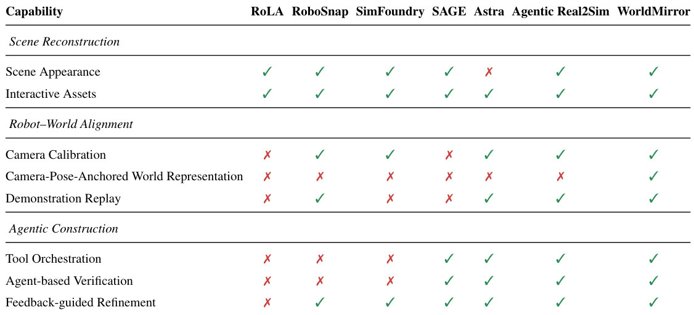
Level 1 · Big picture
把 real-to-sim 当成"迭代修改一个可执行的 world program"：agent 调工具建，judge 验，失败就回退改
- 世界是一个程序 + 一组状态文件（Fig. 2 左 Agent Workspace）：static_scene_state/（Gaussian 场景、collision、相机）、interactive_object_state/（物体 asset、属性、机器人外参）、skills/、check_success/result.json。agent 改的是这些文件和一段 assembly 代码。
- Router agent 不自由发挥：按一张固定的 construction graph 走（scene preparation → camera calibration → support fitting → object construction → layout → robot alignment → trajectory replay，§3.3），只决定"前进 / 调哪个 skill / 回退到哪 / 停下 / 接受"。
- Agent-as-Tool：四个专用 agent（Reconstruction、Calibration、Layout、Replay）被当成 router 可调用的工具，每个带自己的 judge。
- 一个相机坐标系锚住一切（§3.5）：先标定相机得到 world frame W，场景、物体、机器人底座都用它表示，所以录下的关节轨迹不用重规划、不用 retarget，直接播。
- 想看重建出来的世界长什么样：项目页 Scene 节有 7 个 DROID 场景的 3D 环绕视图（可拖动，真机首帧放在角上对照），这里嵌不了。
flowchart LR I["Input
DROID 视频 V + 轨迹 T
“红笔放进白碗”"] --> M["Agent 迭代改 world program
重建→标定→摆放→回放
judge 验，失败回退重做"]:::win M --> O["Output
scene.usdz，原轨迹回放
marker 进 bowl"]
Level 2 · Stages
5 个 stage + 贯穿全程的 world state memory 和 verification loop
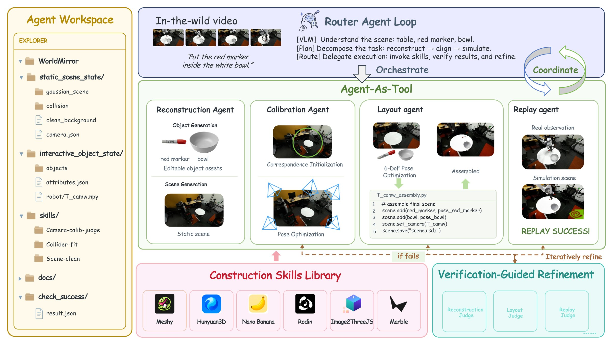
符号表（§3 和 Fig. 2 用到的）
| 符号 | 是什么 | 例子里的值 |
|---|---|---|
| V | 输入的 RGB 视频 | DROID 外置相机拍的"红笔进白碗"片段 |
| T | 和视频同步录下的机器人轨迹（关节序列 + 相机到底座外参） | Franka 臂抓 marker 放进 bowl 的关节序列 |
| Ŝ = A(V, T) | agentic 构建过程 A 产出的 digital twin（式 1） | 最终的 scene.usdz |
| M_t = (S_t, O_t, R_t, F_t) | 第 t 步"已提交"的 world state（式 2）：静态场景、可交互物体、空间关系、验证反馈 | t 步时 Gaussian 场景 + marker/bowl asset + 它们相对相机和机器人的位姿 + 上一次 judge 的结果 |
| S_t | 静态场景：Gaussian 背景、标定好的相机、support 碰撞几何 | gaussian_scene、collision、camera.json |
| O_t | 可交互物体：几何、米制尺度、位姿、物理属性、（若有）关节结构 | objects/ 里的 red marker、bowl 和 attributes.json |
| R_t | 场景、物体、机器人之间的空间关系 | marker 在桌上、bowl 在桌上、机器人底座相对相机的位置 |
| F_t | 验证状态和失败反馈（failure type、rewind target、受影响的组件） | "replay 失败：marker 没进 bowl → 回退到 layout" |
| W / C | 统一世界坐标系 / 标定后的相机坐标系 | W 由这段视频的相机锚定 |
| T_C^W（图里的 T_camw） | 相机坐标系到世界坐标系的刚体变换（旋转 R + 平移 t） | robot/T_camw.npy，assembly 代码里 scene.set_camera(T_camw) |
| X^W = T_C^W X^C | 把相机坐标系下的一个点变到世界坐标系 | 机器人底座也是这样从录下的外参变到 W 里 |
怎么读 Fig. 2
- 左栏 Agent Workspace：world program 就是这棵文件树。static_scene_state/ 是 S_t，interactive_object_state/ 是 O_t（含 robot/T_camw.npy），skills/ 里是 Camera-calib-judge、Collider-fit、Scene-clean 这类 skill，check_success/result.json 是 F_t。
- 上栏 Router Agent Loop：输入是 In-the-wild video 四帧 + 指令 "Put the red marker inside the white bowl"。router 三步：[VLM] 看出 table、red marker、bowl；[Plan] 拆成 reconstruct → align → simulate；[Route] 调 skill、验结果、精修。右侧 Coordinate 的循环箭头就是它反复调度。
- 中栏 Agent-As-Tool，从左到右四个 agent：Reconstruction Agent 上半 Object Generation 出 red marker 和 bowl 两个 Editable object assets，下半 Scene Generation 出 Static scene；Calibration Agent 先 Correspondence Initialization（图上绿圈是匹配区域）再 Pose Optimization（一圈蓝色相机锥）；Layout agent 做 6-DoF Pose Optimization 得到 Assembled 场景，下面那 5 行 T_camw_assembly.py 就是 world program 的核心：scene.add(red_marker, pose_red_marker)、scene.add(bowl, pose_bowl)、scene.set_camera(T_camw)、scene.save("scene.usdz")；Replay agent 把 Real observation 和 Simulation scene 并排比，判 REPLAY SUCCESS。
- 下栏左 Construction Skills Library：Meshy、Hunyuan3D、Nano Banana、Rodin、Image2ThreeJS、Marble——专用生成工具，被 agent 当 skill 调（§3.3 还提到 Articraft 做 articulated 物体）。
- 下栏右 Verification-Guided Refinement：Reconstruction Judge、Layout Judge、Replay Judge。橙色虚线 "if fails" 从 judge 指回各 agent，"Iteratively refine" 指回 Replay——这就是 stage-all 的回退循环。
flowchart TD S1["1 · Understand & Plan（Router）
table, red marker, bowl
reconstruct → align → simulate"] S2["2 · Reconstruct（Reconstruction Agent）
Gaussian 背景 + collision
marker、bowl 两个 asset"] S3["3 · Calibrate（Calibration Agent）
DINOv2 匹配 → 渲染对图优化
→ 相机位姿 T_camw，世界系 W"] S4["4 · Layout & robot align（Layout Agent）
6-DoF 摆 marker、bowl
底座外参变到 W；assembly.py"] S5["5 · Replay（Replay Agent）
Isaac Sim 原轨迹回放
→ REPLAY SUCCESS"] M["World state memory + Judges
M_t = (S_t, O_t, R_t, F_t)
failure type + rewind target"]:::win S1 --> S2 --> S3 --> S4 --> S5 S5 -. "if fails" .-> M M -. "rewind" .-> S2 click S1 href "#stage-1" click S2 href "#stage-2" click S3 href "#stage-3" click S4 href "#stage-4" click S5 href "#stage-5" click M href "#stage-all"
点击 stage 展开 Level 3 细节；绿框是贯穿所有 stage 的 world state memory + verification loop。
Level 3 · Details
每个 stage 的细节
Stage 1 Understand & Plan（Router Agent） 视频 V + 轨迹 T → 场景分解 + 在 construction graph 上的下一步
- Why：不同的错要不同的修法（摆错 → 调布局；缺物体 → 重新分解；碰撞不对 → 改物理表示），所以需要一个会看状态、会选下一步的调度者，而不是固定顺序的脚本（§1）。
- How：VLM 看视频，列出场景里的东西（table, red marker, bowl）；把目标拆成 reconstruct → align → simulate（Fig. 2 上栏）。
- How：router 监督一张固定的 construction graph 的遍历：scene preparation → camera calibration → support fitting → object construction → layout → robot alignment → trajectory replay（§3.3）。它只在合法动作里选：前进到下一 stage、调一个 construction skill、回退到前面某个 stage、停下检查、接受当前世界。
- How：judge 返回带 failure class 和 rewind target 的 typed failure 时，router 走对应的合法转移，execution controller 再校验一遍。"调度是自适应的，但构建依赖关系是固定的"。
flowchart LR V["[VLM] 看视频
table, red marker, bowl"] --> P["[Plan] 拆任务
reconstruct → align
→ simulate"] P --> R["[Route] 选合法动作
前进 / 调 skill / 回退
/ 停 / 接受"]
Running example 在这一步
router 看到桌子、一支 red marker、一个 white bowl；计划先重建静态场景和两个物体，再标定相机、摆放、对齐机器人，最后在 Isaac Sim 里回放 T。第一次调的是 Reconstruction Agent。
Stage 2 Reconstruct（Reconstruction Agent） 视频帧 + 场景分解 → 静态场景 S（Gaussian + collision）+ 可编辑物体 asset O
- Why：通用 agent 自己生不出真实外观和精细几何（Fig. 1 Astra "Low Visual Realism"），所以外观和几何交给专用生成模型，agent 只负责调（§1）。
- How · 静态场景：视觉背景用 Gaussian 表示，物理支撑（桌面）用对应的 collision 几何（§3.2 Static scene state）。Fig. 2 workspace 里对应 gaussian_scene、collision、clean_background，skill 有 Scene-clean 和 Collider-fit。
- How · 物体：任务相关的物体做成可编辑的仿真实体，带几何、米制尺度、位姿、物理属性，必要时带关节结构（§3.2 Interactive object state）。刚体用 Meshy，articulated 用 Articraft（§3.3 b）；skill 库里还有 Hunyuan3D、Nano Banana、Rodin、Image2ThreeJS、Marble（Fig. 2 下栏）。
- How：产出是"候选更新"，要过 Reconstruction Judge 才提交进 world state（§3.2）。
flowchart LR F["视频帧
桌子 + marker + bowl"] --> S["Scene Generation
Gaussian 背景
+ 桌面 collision"] F --> O["Object Generation
Meshy → red marker、bowl
（articulated 用 Articraft）"] S --> J["Reconstruction Judge
通过 → 提交 S_t / O_t"] O --> J
Running example 在这一步
Fig. 2 Reconstruction Agent 面板：上半 Object Generation 出两个 Editable object assets——red marker 和 bowl；下半 Scene Generation 出带白桌的 Static scene。写进 objects/、attributes.json、gaussian_scene、collision。
Stage 3 Calibrate（Calibration Agent） 重建的场景 + 真实视频帧 → 相机位姿 T_C^W，以它锚定的世界系 W
- Why：Tab. 1 里 RoLA、SAGE、Astra 没有 Camera Calibration，所有 baseline 都没有 Camera-Pose-Anchored 表示；相机不对，后面物体和机器人就没有共同的参照，轨迹回放必漂。
- How · 初始化：用 DINOv2 做图像对应（correspondence）匹配，得到相机位姿初值（§3.3 a；Fig. 2 "Correspondence Initialization"）。
- How · 精修：render-to-image 目标：把重建场景渲染出来和真实帧比，损失含光度项和结构项（LSD 线段匹配），优化相机位姿（Fig. 2 "Pose Optimization"）。skill：Camera-calib-judge。
- How · 锚定：标定后建立统一世界系 W，相机到世界的变换是 T_C^W（旋转 R、平移 t，SE(3)）；相机系里的点 X^C 用 X^W = T_C^W X^C 变到 W（§3.5）。后面每个组件都通过"组件到世界"的变换放进 W。
flowchart LR A["DINOv2 对应匹配
真实帧 ↔ 渲染图
→ 位姿初值"] --> B["渲染-对图优化
光度 + LSD 线段匹配"] B --> C["世界系 W
T_camw.npy，camera.json"]:::win
Running example 在这一步
Fig. 2 Calibration Agent 面板：绿圈框出 bowl 附近的匹配区域做初始化；下面一圈蓝色相机锥是优化过程中的候选位姿。结果是 T_camw，之后 marker、bowl、机器人底座都用它说话。
Stage 4 Layout & robot align（Layout Agent） S、O、T_C^W、录下的相机→底座外参 → 摆好的场景 + 机器人底座位姿 + assembly 代码
- Why：物体要回到视频里的位置（Tab. 3 的 IoU / 位置误差），机器人底座要和相机在同一个系里，否则关节轨迹播出来手不在 marker 上。
- How · 摆物体：Camera-anchored assembly（§3.3 c）：每个重建组件放进 W，再精修其尺度、位置、朝向，使渲染出的 mask 和轮廓匹配观测（Fig. 2 "6-DoF Pose Optimization" → "Assembled"）。
- How · 对齐机器人：把录下的相机到底座外参变到 W（含相机轴约定转换和米制尺度），机器人底座就落在 W 里；之后机器人、场景、支撑面、物体共用一个刚体参照（§3.5）。
- How · 写成程序：产出是 assembly 代码 T_camw_assembly.py（Fig. 2）：scene.add(red_marker, pose_red_marker) → scene.add(bowl, pose_bowl) → scene.set_camera(T_camw) → scene.save("scene.usdz")。过 Layout Judge 才提交。
flowchart LR P["6-DoF 位姿优化
marker、bowl 对上
mask 和轮廓"] --> R["机器人底座 → W
录下的外参 × T_camw"] R --> A["assembly.py
scene.add / set_camera / save"]:::win
Running example 在这一步
Fig. 2 Layout agent 面板：左图 marker 和 bowl 各自带一个框做 6-DoF Pose Optimization，右图 Assembled 是摆好后从标定相机视角渲染的画面；下面 5 行代码把 red marker、bowl、相机装进场景并存成 scene.usdz。
Stage 5 Replay（Replay Agent） scene.usdz + 原关节轨迹 T → Isaac Sim 回放结果 + Replay Judge 的判定 F
- Why：最终要的不是"看起来像"，而是录下的动作在 sim 里能复现同样的交互；回放本身就是最严格的几何 + 物理一致性检验（§4.4）。
- How：在 Isaac Sim 里从对齐后的底座直接执行录下的关节轨迹，不改轨迹、不重规划、不 retarget（§3.5、§4.4）。
- How：Replay Judge 把真实观测和仿真画面并排比（Fig. 2 "Real observation" vs "Simulation scene"），结果写进 check_success/result.json；评价指标是位移、终点、方向、DTW 误差，接触 F1 和成功率（§4.1）。
- How：失败 → typed failure 回给 router（去 stage-all）；成功 → 接受这个世界。
flowchart LR E["Isaac Sim 执行 T
原关节序列，不改一帧"] --> J["Replay Judge
真实 vs 仿真画面
result.json"] J --> OK["REPLAY SUCCESS
marker 进 bowl → 接受"]:::win J --> NO["失败
failure type + rewind target"]:::gap
Running example 在这一步
Fig. 2 Replay agent 面板：上 Real observation 是真机夹爪把 marker 放进 bowl，下 Simulation scene 是 Isaac Sim 里同一时刻的画面，判 REPLAY SUCCESS。上面的视频就是这个片段的真机和回放。Fig. 4（E3）给了三个别的 DROID 片段的腕部视角逐帧对比。
贯穿全程 World state memory + Verification-guided refinement 每个 stage 的候选更新 → judge 验证 → 提交，或 typed failure → router 回退重做
- Why：Tab. 5 的 Fixed Iterative 说明"多跑几轮"不够：不知道哪个组件错了就修不好（final 误差 31.77 cm，仍失败）。要的是带诊断的回退。
- How · 共享记忆：所有 agent 读写同一个 world state M_t = (S_t, O_t, R_t, F_t)（式 2）：当前重建、组件间空间关系、仿真属性、最新验证反馈（§3.2）。
- How · 先验后提交：每个专用 agent 产出候选更新，只有对应的 judge 通过才提交；否则已提交状态不变，typed failure 存进 F_t 交给 router（§3.2、§3.4）。
- How · 诊断：judge 用渲染观测、重建配置和仿真结果检查视觉、空间、物理一致性，结合当前 world state 定位最可能的失败源，返回：验证状态、failure type、rewind target、受影响的组件（§3.4 Iterative Verification）。
- How · 回退：router 按 failure class 和 rewind target 走 construction graph 上的合法转移；依赖被改组件的下游组件标为过期、在修好后重建；两级自适应——专用 agent 在自己 stage 内搜参数，router 跨 stage 回退做结构性修正；直到所有检查通过或用完 refinement 预算（§3.4 Closed-loop Refinement）。
flowchart TD C["某 agent 的候选更新
如 layout：marker 的新位姿"] --> J["对应的 Judge
视觉 / 空间 / 物理一致性"] J -- 通过 --> K["提交进 M_t
S_t / O_t / R_t 更新"]:::win J -- 失败 --> F["typed failure → F_t
failure type、rewind target、
受影响组件"]:::gap F --> R["Router 回退
重做出错 stage，
下游组件标过期后重建"] R --> C
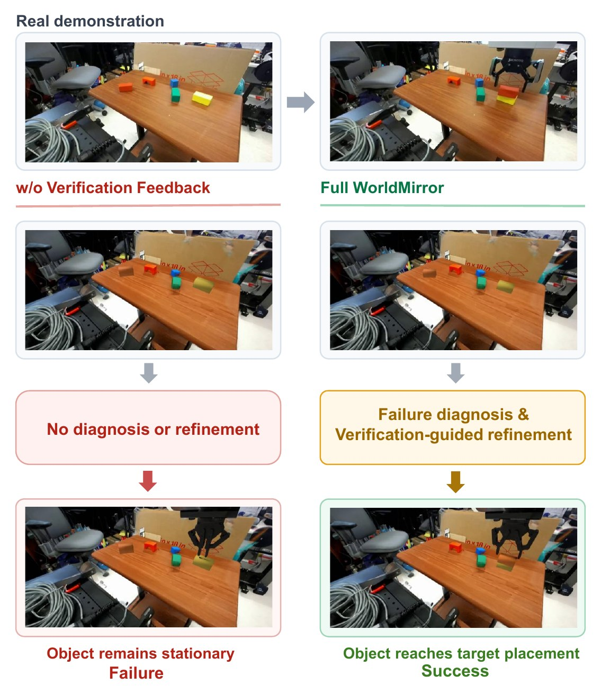
怎么读这张图
- 顶行 Real demonstration：木桌上几个彩色方块，真机夹爪把一个方块推到目标位置——这是 §4.5 的 rail manipulation 任务，不是本页的 marker/bowl 片段。
- 左列 w/o Verification Feedback：一次重建、一次回放，中间红框 "No diagnosis or refinement"，结果 "Object remains stationary"：夹爪动了，方块没动（Tab. 5 One-pass：Trans. 0 cm、Lift 0 cm、final 误差 33.86 cm）。
- 右列 Full WorldMirror：黄框 "Failure diagnosis & Verification-guided refinement"——Replay Judge 判失败，router 回退重做，第 4 次回放成功（Tab. 5：Replay Iter. 4，final 误差 2.34 cm，Trans. 32.98 cm）。
Running example 在这一步
延伸例子：假设第一次回放时夹爪在 marker 上方几厘米处合拢、marker 没被抓起。Replay Judge 对比真实和仿真画面，判失败，failure type 指向物体位姿 / 尺度，rewind target 是 layout；router 回到 Stage 4 重新优化 marker 的 6-DoF 位姿和尺度，assembly.py 和 scene.usdz 标为过期后重生成，再回放。论文给的数字来自 rail 任务（Tab. 5、6），marker/bowl 片段本身没有单独的回放次数报告。
Recap：例子覆盖了论文的哪些 idea
| 论文里的 idea | 例子里在哪体现 |
|---|---|
| Real-to-sim = 迭代修改一个可执行的 world program（§1、§3.1） | Level 1：Agent Workspace 的文件树 + T_camw_assembly.py 就是那个程序 |
| Router 在固定 construction graph 上做自适应调度（§3.3） | Stage 1：VLM 看出 table/marker/bowl，拆成 reconstruct → align → simulate，只选合法动作 |
| Agent-as-Tool：四个专用 agent（§3.3） | Stage 2–5：Reconstruction、Calibration、Layout、Replay 各一个 |
| Construction Skills Library：标定、场景 / 物体生成、camera-anchored 装配（§3.3） | Stage 2 的 Meshy / Articraft，Stage 3 的 DINOv2 + LSD，Stage 4 的 assembly |
| Structured world state memory M_t = (S_t, O_t, R_t, F_t)（§3.2） | 符号表 + stage-all：static_scene_state/、interactive_object_state/、result.json |
| Camera-pose-anchored 坐标系，机器人底座也变到 W（§3.5） | Stage 3 得 T_camw，Stage 4 把 marker、bowl、底座都放进 W |
| 原轨迹直接回放，不 retarget（§3.5、§4.4） | Stage 5：Isaac Sim 执行 T 不改一帧 |
| Verification-guided refinement：typed failure + rewind（§3.4） | stage-all：第一次回放失败 → 回到 layout 重做 → 第 4 次成功（Tab. 5） |
| 主结果：回放误差和成功率（Tab. 4）、消融（Tab. 5、6） | Results：E3 的四段回放视频就是这个例子，E4、E5 是 rail 任务 |
Results
外观和回放上领先，布局不如 GPT-6 Astra；回放成功靠的是"验证 + 带诊断的回退"，不是多跑几轮
顺序同论文 §4：E1 外观像不像真机 → E2 物体摆得准不准 → E3 原轨迹能不能直接回放 → E4 回放成功靠的是哪种精修策略 → E5 三个组件各贡献多少。前两个比重建质量，后三个比回放误差和成功率；论文没有比较运行时间和成本。所有评测都在 DROID 的 in-the-wild 演示上，回放用 Isaac Sim。
E1重建出来的场景，看起来像真机画面吗？§4.2
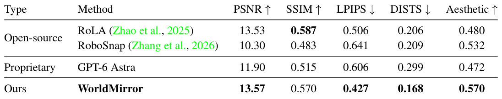
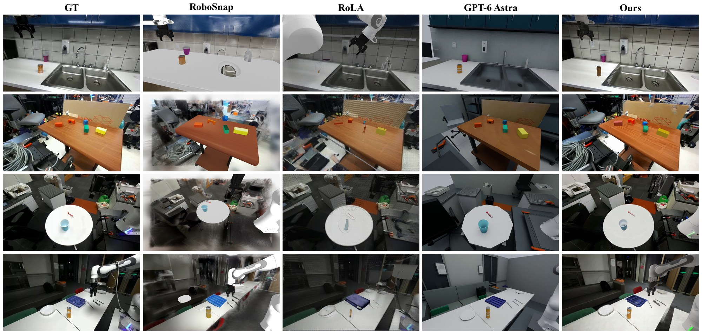
- 说明什么
- 感知指标上最像，像素指标上和 RoLA 持平。LPIPS 0.427（RoLA 0.506、RoboSnap 0.641、Astra 0.606），DISTS 0.168（0.206 / 0.209 / 0.299），Aesthetic 0.570 最高；PSNR 13.57 只比 RoLA 的 13.53 高一点，SSIM 0.570 低于 RoLA 的 0.587。作者的措辞是"competitive PSNR"、"improved visual correspondence, particularly under perceptual metrics"。
- 在故事里
- 回应 Problem 第二行：通用 agent（Astra）"Low Visual Realism"，Gaussian one-shot（RoboSnap）背景糊；专用生成工具 + agent 调度能把外观做像。
- 指标
- PSNR、SSIM（越高越好）、LPIPS、DISTS（越低越好）、aesthetic score（越高越好），全是图像级指标，没有成功 / 失败判定；论文没写多少次、几个 seed。
- 怎么评测
- 10 个 DROID 场景，拿仿真的第一帧渲染和真机外置相机图比（同一视角）。
- baseline：RoLA、RoboSnap（开源）、GPT-6 Astra（闭源）；SimFoundry 没进这张表。怎么跑 baseline 论文没细说；项目页注明 RoboSnap 不支持接机械臂，"keep the same arm setting as WorldMirror"。
E2物体有没有摆回真机里的位置？§4.3
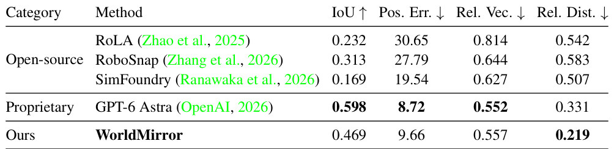
- 说明什么
- 胜过所有开源 baseline，但不如 GPT-6 Astra。Rel. Dist. 0.219 最低（Astra 0.331）；mask IoU 0.469 低于 Astra 0.598，Pos. Err. 9.66 高于 Astra 8.72，Rel. Vec. 0.557 vs 0.552。开源三家：IoU 0.232 / 0.313 / 0.169，Pos. Err. 30.65 / 27.79 / 19.54。作者自己说："not a consistent advantage across spatial metrics"。
- 在故事里
- Fig. 1 第一行"Spatial Structure"两边都打 ✓ 的依据；也是论文坦白的短板。
- 指标
- mask IoU（越高越好）、位置误差、相对向量误差、相对距离误差（越低越好）；3D 指标从可见表面的质心算。Pos. Err. 论文没写单位；没有成功 / 失败判定。
- 怎么评测
- DROID 里共享的 17 个任务相关物体和 8 对物体。
- baseline：RoLA、RoboSnap、SimFoundry（开源），GPT-6 Astra（闭源）；这是 SimFoundry 唯一出现的表。
E3录下的轨迹原封不动播，机器人还能完成同样的交互吗？§4.4
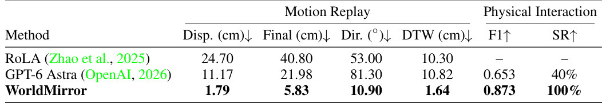
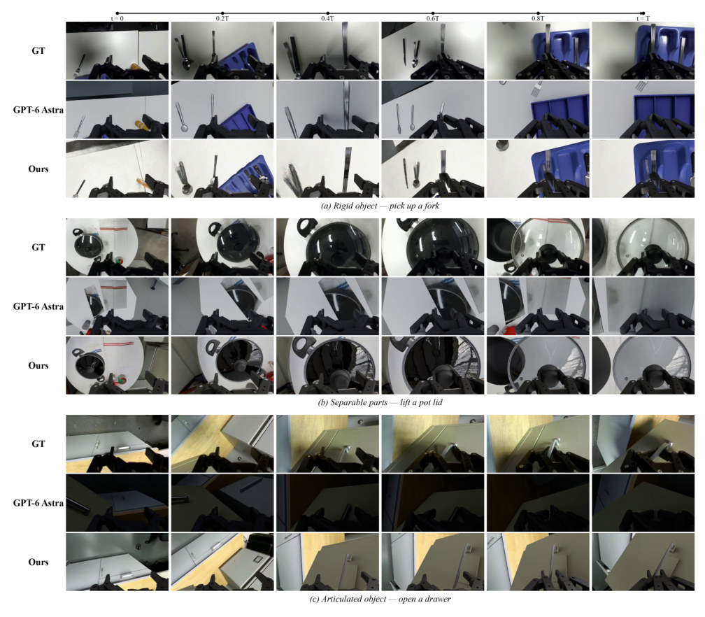
- 说明什么
- 回放误差全面最低，成功率 100%。位移误差 1.79 cm（Astra 11.17、RoLA 24.70），终点误差 5.83（21.98 / 40.80）cm，方向误差 10.90°（81.30° / 53.00°），DTW 1.64（10.82 / 10.30）cm；接触 F1 0.873 vs Astra 0.653；成功率 100% vs 40%。RoLA 的 F1 和 SR 是 "–"。
- 在故事里
- 论文的核心主张：camera-anchored 坐标系 + 验证精修让"不改轨迹、不 retarget"的直接回放成立（§3.5）；也是 Fig. 1 第三行"Physical Consistency"的依据。
- 指标
-
- Motion replay：仿真里物体的运动和真机比——位移、终点位置、方向、DTW 误差（§4.1 "object-motion errors"）。
- Physical interaction：接触 F1（contact F1）和回放成功率（SR）；"成功"的具体判据论文没有写。
- 评测了多少条演示论文没写（"on the evaluated demonstrations"）。
- 怎么评测
- Isaac Sim 里直接执行原 DROID 关节轨迹，不改轨迹、不重规划、不做 IK 适配（§4.4）。
- baseline 只有 RoLA 和 GPT-6 Astra；RoboSnap、SimFoundry 没进这张表。
E4回放失败后，怎样的精修才救得回来？§4.5
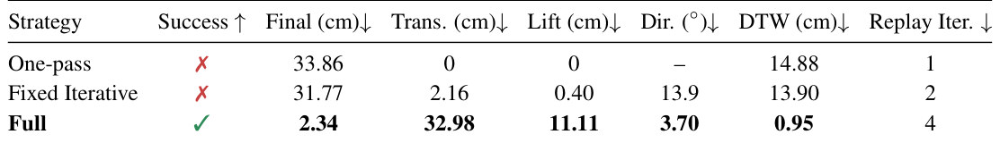
- 说明什么
- 只有带失败诊断的精修能成功；重复精修不行。One-pass ✗，final 误差 33.86 cm，Trans. 0、Lift 0；Fixed Iterative 跑了 2 次回放仍 ✗，31.77 cm；Full 第 4 次回放 ✓，final 2.34 cm、Trans. 32.98 cm、Lift 11.11 cm、DTW 0.95 cm。
- 在故事里
- 撑起 §3.4 的论点：要的是 typed failure + rewind target，不是"多跑几轮"；Fig. 5 是它的定性版（见 stage-all）。
- 指标
- Success（✓/✗）、final / translation / lift / direction / DTW 误差、Replay Iter.（回放次数）；"成功"的判据论文没有写。单个任务，没有多次或多 seed。
- 怎么评测
- 一个 rail manipulation 任务（木桌上的彩色木块），三种策略共用同一次重建。
- One-pass：重建后只回放一次；Fixed Iterative：反复精修但不做失败诊断；Full：结构化诊断 + 有针对性的精修。
E5stateful memory、adaptive routing、feedback refinement 各起多大作用？§4.5
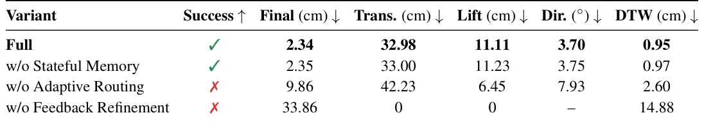
- 说明什么
- adaptive routing 和 verification feedback 是关键，memory 几乎不影响结果。w/o Stateful Memory ✓、final 2.35 cm（Full 2.34）；w/o Adaptive Routing ✗、9.86 cm、Trans. 42.23 cm（过头）；w/o Feedback Refinement ✗、33.86 cm、物体没动。
- 在故事里
- 把 §3 的三个设计分开计价：router 的自适应回退和 judge 的反馈决定成败；world state memory 的作用是跨 stage 保存中间结果（作者原话）。
- 指标
- 同 E4。
- 怎么评测
- 同一个 rail 任务，"shared setup with identical replay conditions"，每次去掉一个组件。
- 没有在别的任务上重复，也没有多 seed。
Limits
局限和开放问题
- 评测很小（§5 作者自述）：视觉 10 个 DROID 场景，布局 17 个物体 / 8 对，消融只在一个 rail 任务上；回放成功率 100% 是"在评测的演示上"，论文没写具体条数。
- 没有下游验证：没做 policy 学习、没做真机部署、没做跨任务泛化（§5）。
- 布局不如 GPT-6 Astra：IoU 0.469 vs 0.598，位置误差 9.66 vs 8.72（Tab. 3）；Tab. 2 的 SSIM 也输给 RoLA。
- 上限受工具限制：重建质量取决于可用的生成和仿真工具（§5）；Fig. 2 的 skill 库里 Meshy、Nano Banana、Rodin、Marble 都是商业服务。
- 没写成本：每个 twin 要多少次工具调用、多少回放、多长时间，论文没报；Tab. 5 只给了 replay 次数（4）。
- 没有代码：项目页只有论文链接（2026-11-03 查看）；judge 具体怎么判、failure type 有哪几类、construction graph 的合法转移表，论文都只有文字描述。
For Agent-centric-real-to-sim
对我们有什么用
- 把 real2sim-anything-indoor 的"视频 → Blender 房间"从 one-pass 改成"world program + judge + rewind"：WorldMirror 的 Tab. 5 就是这个差距（33.86 → 2.34 cm）。具体可照搬的三件东西：一棵状态文件树（static / interactive / check_success）、一段可重跑的 assembly 脚本、每个 stage 一个返回 failure type + rewind target 的 judge。
- 相机锚定的坐标系是让"录下的动作直接回放"成立的关键：先用 DINOv2 对应 + 渲染对图（光度 + LSD 线段）标定视频相机，再把物体和机器人底座（录下的外参）都变到这个系里。我们从视频里拿 GVHMR 人体动作放进 Blender 房间时，同样的"先标定相机、一切挂相机系"能避免人和场景对不上；回放成功本身可以当我们的验收指标。
- WorldClaw 的 skill 库和它的 Construction Skills Library 同构：它把 Meshy / Hunyuan3D / Articraft 当 skill，agent 只调不画；可以在 WorldClaw 的 prompt → white-box → Genesis 流程里加 Camera-calib-judge、Collider-fit、Scene-clean 这类"检查型"skill，而不只是"生成型"skill。